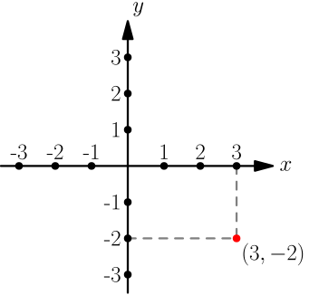
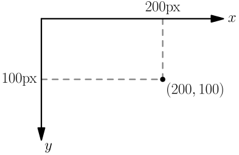

Geometry and Trig¶
This chapter contains useful stuff that isn't too difficult to get started with. You'll find it especially useful if you like writing games, and this chapter contains a working example game.
Angles¶
You probably know what degrees are. For example, 45 degrees means an angle like this:

Real mathematicians™ don't use degrees. They use radians instead:

The comic comes from here.
Most programming languages also use radians, and if you insist on using degrees, you will need to convert between degrees and radians a lot. Let me explain you what radians are, so you can avoid that mess.
Let's draw a circle with radius 1; that is, the distance between any point on the circle and the center of the circle is 1.
Now let's take a slice of this circle so that the arc length of the slice is also 1. The angle we get in the center is then 1 radian.
In general, if you pick a circle slice with arc length $x$, the angle will be $x$ radians:
Here are more pictures of angles that should help you understand this.
As you can see, 6 radians is almost a turn, and 3 radians is almost a half
turn. A full turn happens to be $2\pi$ radians, where $\pi = 3.14159...$ is the
famous constant, available as something like math.pi or Math.PI in most
programming languages.
Let's prove that a full turn is $2\pi$ radians. First of all, if we want to do anything at all with $\pi$, we need to know what it is. Usually $\pi$ is presented like this in schoolbook math:
So, for any circle, if we measure the $d$, the length of the blue part will be $\pi$ times the $d$. It doesn't matter what size the circle is, and I'll explain more about that soon.
Anyway, now let's have a look at the picture with an angle of $x$ radians, and let's modify it so that it represents the angle of a full turn:
The length of the long, black line is $2$ because it's double the length of the $1$ line. Comparing the pictures gives $d=2$ and $x=\pi d = \pi \cdot 2 = 2\pi$.
Exercise
Find a round object and measuring tape, and use them to calculate $\pi$. You should get quite close to 3.14. Like I said, any round object will do, and you will always get the same value.

The animation comes from here.
{kind=link}
Here are pictures of important angles in radians. Spend a while looking at this section so that if I say $\pi / 2$, you'll immediately think of an angle like ∟.
Another Exercise
How many degrees is $\pi$ radians? How about 1 radian? How about $x$
radians? Write a radians_to_degrees() function using your favorite
programming language.
Scaling¶
If we multiply all measurements of a shape or picture by a positive number, the size changes. For example, here the blue triangle is the yellow triangle scaled up by 2:

Note that angles do not change when scaling. These pictures represent the bottom-left corners of the above triangles, and as you can see, they are identical:

Scaling with a number less than 1 is known as scaling down, and it makes things smaller. For example, dividing by 2 is same as multiplying by $\frac 1 2 = 0.5$, so dividing everything by 2 does this:

Scaling seems to change the lengths of all straight lines the same way, but it works for curvy things as well. We can explain this by thinking of the curve as if it consisted of a bunch of short and straight lines. It doesn't, but if we use many lines, it will be "accurate enough"; more about this soon. Also, note that I said "explain", not "prove"; the purpose of this thing is to give you an idea of why the curve scaling thing works, and I have no idea whether real mathematicians think that this explanation is a perfect proof.
For example, let's say we have this arc:
Let $N \in \{1,2,3,...\}$ be the number of short lines, and let $L_1,L_2,L_3,...,L_N$ be the lengths of the lines. Like this ($N=8$ in the picture, but it doesn't have to be 8):
Total length before the scaling is then $L_1+L_2+...+L_N$. Let $s > 0$. After scaling by $s$, the lengths are $sL_1,sL_2,...,sL_N$, and the total length is then $sL_1+sL_2+...+sL_N$. We can factor it:
$$\begin{align}\underbrace{sL_1+sL_2+...+sL_N}_\text{after scaling} = s \cdot \underbrace{(L_1+L_2+...+sL_N)}_\text{before scaling}\end{align}$$The total length got scaled by $s$.
Note that this was just an approximation. Mathematical curves don't need to consist of straight lines, but even though it is an approximation, we can make any errors as small as we want by choosing many lines and making them smaller. Everything we did above will work the same, and it doesn't matter how many things the $...$ parts contain. The $N$ can be as big as we want; if we set $N=1000000000000000000000$ or something, everything will be really precise.
For example, this drawing has 20 lines instead of 8, and it's already much harder to actually see the lines:
Now we are ready to understand why $\pi$ appears in all circles. Let's draw a circle with diameter $d$, and let $x$ represent the length of the blue line. (Yes, we'll always have $x=\pi d$, but we are trying to prove it now, so we must pretend that we don't know it yet.)
Now dividing the lengths gives $\frac{\color{blue}x}{d}$. You'll see why we divided them in a moment.
Let $s \in \mathbb{R}, s > 0$. Scaling by $s$ gives this, because all measurements get multiplied by $s$, including the $x$:
In my pictures, $s > 1$ because scaling by $s$ made the thing bigger, but it works the same way if $0 < s < 1$ or $s=1$. Let's do the same division thing again based on this picture:
$$\begin{align}\frac{\color{blue}{sx}}{sd} = \frac x d\end{align}$$The $s$ cancels so that we end up with the same $\frac x d$ ratio every time, no matter how we scale the circle. In other words, this works for circles of all sizes. The $\frac x d$ ratio is called $\pi$, and we get our final result:
$$\begin{align}\frac x d &= \pi \\ x &= \pi d\end{align}$$Coordinates¶
Here's a boring number line that represents $\mathbb{R}$.
If we have two number lines called $x$ and $y$, we can do this:
Every point can now be represented with two numbers. These are known as the $x$ and $y$ coordinates. For example, the $x$ coordinate of the red point in the below picture is $3$ and the $y$ coordinate is $-2$:

Usually $x$ goes before $y$ for historical reasons, so $(3,-2)$ means $(x,y)=(3,-2)$.
So far this probably feels like some useless gibberish that has nothing to do with real life, but most programming languages have something that works with coordinates. Usually these coordinates work so that 1 unit represents 1 pixel on the screen, and the $y$ axis is upside down compared to what mathematicians are used to. Like this:

Basic Coordinate Stuff¶
There is a working ball and paddle at the end of this chapter. In that game, I have code like this:
ball.centery = screen.height - paddle.thickness - ball.radius;
In this game, all coordinates are in pixels. When you see something like this, you can always draw a picture and figure out what it does. For example, let's figure out where the ball ends up when this code runs. In the game, there is no space between the bottom of the screen and the paddle, so the picture looks like this:
There are many things in the picture, but if you look at it, you can now see what the code is doing. Let's go through it a step at a time to make sure you understand all of it:
- The $y$ axis is "upside down" as usual in programming, so
screen.heightis the $y$ coordinate of the bottom of the screen, as shown in the picture. - The top of the paddle is above the bottom of the screen, so its $y$
coordinate is smaller. That's
screen.height - paddle.thickness. - The center of the ball is even higher, and that difference is the
radius of the ball because the ball sits on top of the paddle. That's
why we set the $y$ coordinate of the ball's center, or
ball.centery, toscreen.height - paddle.thickness - ball.radius.
If you are still following, that's great! This example is probably the most complicated calculation in my game, and now you should have no trouble at all with understanding the other things.
Exercise
The $(x,y)$ location of something usually means the top left corner in programming. Where does the bottom right corner of the window go in this GUI code?
window.resize(300, 200); // (width, height)
window.move_to(600, 500); // (x, y)
Take a piece of paper and draw a picture of the whole screen with the window in it; it'll help you to understand how this works.
Trig with the Unit Circle¶
This section uses the Greek theta letter $\theta$ because mathematicians often use it to denote an angle. Don't be confused, it's just a letter.
Here's a problem that combines the coordinate stuff with the angle stuff above. Let $\theta \in \mathbb{R}$. The unit circle means a circle with radius 1. Let's draw a unit circle in the center of the xy plane, and let's draw the $\theta$ angle to it.
There are quite a few things going on in the above drawing. Make sure you understand them before moving on.
Now, what are the coordinates of the red dot? Mathematicians have defined a couple functions just for solving this problem:
$$\begin{align}x &= \cos(\theta) \\ y &= \sin(\theta)\end{align}$$The function names are $\cos$ and $\sin$ for historical reasons. Almost all
programming languages have cos and sin functions, and you don't need to
know how they are implemented. You just need to know what they do.
As before, here's a pile of examples:

You can check these with Python:
>>> import math
>>> math.sin(math.pi/2)
1.0
>>> math.cos(math.pi/2)
6.123233995736766e-17
Mathematically $\cos(\frac \pi 2) = 0$, but Python's math.sin and
math.cos use floats. Floats are not mathematically precise. For example,
0.1 + 0.2 is not exactly 0.3, but something very close to it:
>>> 0.1 + 0.2
0.30000000000000004
math.cos(math.pi/2) returned 6.123233995736766e-17, and the e-17 at
the end of the number means that we actually have 6.12323399... with the .
moved left by 17 places (and zeros added as needed):
As you can see, this is just a tiny error, and the result is in fact very close to $0$.
Exercise
The above drawings have $\theta \ge 0$, but I said $\theta \in \mathbb{R}$, so it can also be negative. What is $\sin(-\frac \pi 2)$? Try to first solve it by drawing a picture, and check the answer with your favorite programming language.
Now it's time to generalize this to circles with a radius other than 1. Let $r \in \mathbb{R}$ and $r > 0$. Let's scale this thing...
...by $r$:
Like I said earlier, angles don't change when scaling, but lengths do. Here $\theta$ represented an angle and an arc length, so we have the old $\theta$ angle and a scaled $r\theta$ arc length.
The coordinates also get scaled by $r$ just like other lengths, because you can think of them as lengths along the axises:
Exercise
The player of a 2D game should move by 2 pixels every time a
player.move() method is called. It means that the player goes to some
place on the circle with radius 2 around it:

Note how $\theta$ is clockwise here but it has been counter-clockwise until now; clockwise angles are a programming thing while mathematicians do things counter-clockwise. This works nicely with the "upside down" $y$ axis.
Let player.x and player.y be the current coordinates of the player
as floats (they may need to be rounded to ints when actually drawing
things). Let player.speed = 2 and player.angle = θ. Write the
player.move() method using your favorite programming language, and
compare it to the moving code in my ball and paddle game.
Example: Ball and Paddle¶
Here's a minimal game written with my canvaswrapper.js script that demonstrates most things we have learned so far. Click it, press arrow up to start the game and then use arrow keys to move the paddle.
Here's the code:
var screen = new CanvasWrapper('canvas1');
/* handy things:
paddle.centerx - paddle.length/2 x coordinate of left edge
paddle.centerx + paddle.length/2 x coordinate of right edge
screen.height - paddle.thickness y coordinate of top edge
screen.height y coordinate of bottom edge
*/
var paddle = {
// centerx is added later
length: 200,
thickness: 15,
speed: 10,
movement: 0, // -1 means left, 1 means right
};
/* handy things:
ball.centerx - ball.radius x coordinate of left edge
ball.centerx + ball.radius x coordinate of right edge
ball.centery - ball.radius y coordinate of top edge
ball.centery + ball.radius y coordinate of bottom edge
*/
var ball = {
// centerx, centery, angle and moving are added later
radius: 10,
speed: 10,
};
function resetGame() {
paddle.centerx = screen.width/2;
ball.centerx = screen.width/2;
ball.centery = screen.height - paddle.thickness - ball.radius;
ball.angle = 1.5*Math.PI; // up
ball.moving = false;
}
resetGame();
runRepeatedly(function() {
screen.fill('black');
screen.drawRectangle(
// left x, top y, width, height, color
paddle.centerx - paddle.length/2, screen.height - paddle.thickness,
paddle.length, paddle.thickness, '#00ff00');
screen.drawCircle(ball.centerx, ball.centery, ball.radius, 'white');
if (ball.moving) {
if (ball.centery > screen.height) {
resetGame();
return;
}
ball.centerx += ball.speed * Math.cos(ball.angle);
ball.centery += ball.speed * Math.sin(ball.angle);
if (ball.centerx - ball.radius < 0) { // bumps left wall
ball.angle = Math.PI - ball.angle;
ball.centerx = ball.radius;
} else if (ball.centerx + ball.radius > screen.width) { // right wall
ball.angle = Math.PI - ball.angle;
ball.centerx = screen.width - ball.radius;
} else if (ball.centery - ball.radius < 0) { // top
ball.angle = -ball.angle;
ball.centery = ball.radius;
} else if (ball.centery + ball.radius > screen.height - paddle.thickness) {
// paddle?
paddleLeft = paddle.centerx - paddle.length/2;
paddleRight = paddle.centerx + paddle.length/2;
if (paddleLeft < ball.centerx && ball.centerx < paddleRight) {
// yes, it hits the paddle
ball.angle = -ball.angle;
ball.centery = screen.height-paddle.thickness-ball.radius;
// also adjust the angle depending on which side of the paddle the
// ball hits, 100 is a constant that I found with trial and error,
// and it seems to work well
ball.angle += (ball.centerx - paddle.centerx) / 100;
}
}
paddle.centerx += paddle.movement*paddle.speed;
}
screen.getEvents().forEach(evt => {
if (evt.type == 'keydown') {
if (ball.moving) {
if (evt.key == 'ArrowLeft') {
paddle.movement = -1;
} else if (evt.key == 'ArrowRight') {
paddle.movement = 1;
}
} else {
if (evt.key == 'ArrowUp') {
ball.moving = true;
return;
}
}
} else if (evt.type == 'keyup' && (
(evt.key == 'ArrowLeft' && paddle.movement == -1) ||
(evt.key == 'ArrowRight' && paddle.movement == 1))) {
// cancel the previous ArrowLeft or ArrowRight press
paddle.movement = 0;
}
});
});
Exercise
A part of my game works similarly to this pseudocode:
if (the ball hits the left wall or the right wall) {
ball.angle = Math.PI - ball.angle;
}
if (the ball hits the top wall or the paddle) {
ball.angle = -ball.angle;
}
Figure out why this makes the ball bounce correctly by drawing pictures of the ball hitting the walls.